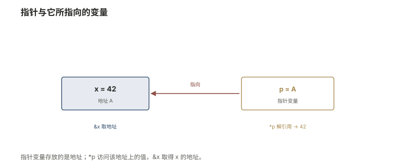

SOE105 · 第 13 章
指针与动态内存
Pointers & Dynamic Objects
虚线下划线为术语；悬停查看中文、英文与释义，完整词典见“术语”。
本章目录
本章从“变量其实是内存中的一格”讲起：用 & 取地址、用 * 解引用，理解指针与数组名的关系，最后用 new/delete 在堆上分配对象，并处理悬空指针与内存泄漏这两类典型错误。
本章要点
- 运行中的程序有堆（heap）与栈（stack）：堆放全局数据并供动态分配，栈放活动函数的局部数据。
- 每个变量占据一块内存槽，槽的大小由类型决定；& 取地址，* 解引用。
- 指针是存地址的变量，有类型之分；指针的大小取决于机器架构，与所指内容无关。
- 数组名是指向首元素的指针常量，*(a + n) 等价于 a[n]；指针算术以元素为单位。
- nullptr 表示空指针，解引用它是错误；二维数组可用指针逐层降为一维。
- new/delete 在堆上分配与释放，必须配对；delete 之后原指针失效（悬空指针），丢失指针则内存泄漏。
- C 用 malloc/free，C++ 用 new/delete；前者按字节、返回 void*、失败返回 NULL。
13.1 内存模型：堆与栈
讲义先给出一张程序内存的全局图：每个正在执行的程序都有一块堆heap和一块栈stack。堆是一池空闲的全局内存，用来存放全局数据/对象，并提供可动态分配与释放的额外内存；栈是一叠局部内存，用来存放活动函数的局部数据/对象。
图的右侧画的是栈的生长方式：main() 在最下面，调用 foo1() 就压上一层 foo1()，foo1() 里再调 foo1() 又压一层，再调 foo2() 再压一层。讲义在这里加了一句提醒——“回想一下每次递归调用会发生什么”——递归之所以能在回代时保住每一层的 n，靠的就是这种一层层叠起来的局部存储。

Clean vector diagram of a running program's memory layout: a tall block on the left labelled heap, a pool of free global memory; a stacked column on the right labelled stack with four stacked frames from bottom to top named main(), foo1(), foo1(), foo2(); arrows showing allocation into the heap and frames pushed onto the stack. Flat 2D, thin 1.5 px strokes, muted slate blue and warm grey palette, white background, English labels, no cartoon, no gradient, no shadow.
这张图是后面所有内容的地图：普通局部变量在栈上，new 出来的对象在堆上，全局变量在全局区。指针之所以有用，就是因为它能“指向”这三处中的任意一处——代价是它也可能指向不该指的地方。
L15 p.2–3
13.2 变量与地址：& 运算符
讲义给了一个朴素但关键的定义：变量事实上是内存中用来存放某个确定值的一块区域；每个变量被分配到一格内存槽（大小取决于数据类型），变量的数据就存在那里。幻灯片画了一张带地址的表：float y = 12.5 存在 1001，int temperature = 32 存在 1003 附近，char letter = 'c' 占一格，int number 只声明未赋值。
取地址运算符address-of operator写作 &，用法是 &变量名，返回该变量的内存地址。讲义的例子：a = 100 存在 1008，b = 123.45 存在 1016；cout << a 打印 100，cout << &a 打印 1008。同一个变量，加不加 &，一个是“里面的值”，一个是“它在哪里”。
讲义特意留了一句提醒：不要把它和引用类型（函数参数里的 type &）搞混。两者用的是同一个符号，但一个是“取地址”的运算，一个是“给已有变量起别名”的声明——出现的位置不同，含义就不同。
L15 p.3–6
13.3 指针变量：声明、取址与解引用
讲义对指针的定义有三条：它是一种基本数据类型；它是一个用来存放某个内存单元地址的变量；它可以用来引用这个内存单元。C/C++ 为每一种对象类型都准备了对应的指针类型——指向 int 的指针、指向 char 的指针、指向用户自定义对象（如 RationalNumber）的指针，甚至指向指针的指针。
声明写作 type* pointer_name; 或 type *pointer_name;，其中 type 是“被指向的数据”的类型。要访问指针所指的对象，就用解引用dereference：读值写 *pointer_name，改值写 *pointer_name = ...。
int a = 20;
int *p = &a;
cout << "a :" << a << endl; // value of a -> 20
cout << "&a:" << &a << endl; // address of a -> 1008
cout << "p :" << p << endl; // value of p = &a -> 1008
cout << "*p:" << *p << endl; // dereference -> 20
cout << "&p:" << &p << endl; // address of p itself -> 1024这五行输出把“指针也是一只盒子”讲透了：p 自己的地址是 1024，p 里存的内容是 1008（也就是 a 的地址），而 *p 取的是 1008 那一格里的值 20。地址 1008 与 1024 都是讲义示例中的编号，实际运行时每次可能不同，但“两层地址”的结构不变。

绘图提示词
Clean vector memory diagram showing two labelled boxes on an address grid: box a at address 1008 holding 20, box p at address 1024 holding an arrow that points to box a; labels above the boxes read a and p, small captions read value of a, value of p is the address of a, dereference of p gives 20. Flat 2D, thin 1.5 px strokes, muted slate blue and warm grey palette, white background, English labels, no cartoon, no gradient, no shadow.
类型之所以不能省，是因为 *p 要知道“读几个字节、按什么格式解释”。指向 int 的指针解引用读 4 个字节，指向 char 的指针只读 1 个；把 char* 当成 int* 用，读到的是拼起来的四个字节。
L15 p.4–10
13.4 一个星号，两种任务
讲义专门用一页讲“别搞混”：声明 int *p; 时，星号是声明的一部分，意思是“p 是个指针”；而 *p = 5; 里的星号是解引用运算符，意思是“p 指向的那一格”。两个任务用了同一个符号，读代码时要靠位置判断——出现在类型后面是声明，出现在表达式里是取值。
int a = 100, b = 88, c = 8;
int *p1 = &a, *p2, *p3 = &c;
p2 = &b; // p2 points to b
p2 = p1; // p2 points to a
b = *p3; // assign c to b
*p2 = *p3; // assign c to a
cout << a << b << c; // output: 888逐行看：p2 先指向 b，再改指向 a；b = *p3 把 c 的值 8 赋给 b，b 变成 8；*p2 = *p3 把 c 的值赋给 p2 所指的 a，a 也变成 8。三个变量最后都是 8，输出正是 888。注意 p2 = p1 改变的是“指向谁”，*p2 = *p3 改变的是“指向的那格里的值”——前者动指针，后者动数据。
讲义还给了 sizeof 的例子，用来看清“指针的大小”与“所指对象的大小”是两件事。在讲义那台机器上：sizeof(pa) = 8、sizeof(*pa) = 4、sizeof(&pa) = 8；pd 是 8/8/8；pc 是 8/1/8；ps 是 8/24/8。四个指针自身都是 8 字节，而它们指向的 int、double、char、string 分别是 4、8、1、24 字节。
讲义的结论值得原样记住：指针的大小取决于计算机架构，而不是它存放的内容。同一台机器上所有指针一样大，无论指向 int 还是指向一个很大的对象。
L15 p.9–12
13.5 用指针交换：与传引用对照
指针最传统的用法是把地址传进函数，让函数改到调用者的变量。讲义的 indirectSwap(char *ptr1, char *ptr2) 用三行完成交换：temp = *ptr1; *ptr1 = *ptr2; *ptr2 = temp;。主程序调用时写 indirectSwap(&a, &b)，把两个变量的地址交出去；函数里改的是“地址所指的格子”，所以 a 与 b 真的换了。
void indirectSwap(char *ptr1, char *ptr2) {
char temp = *ptr1;
*ptr1 = *ptr2;
*ptr2 = temp;
}
int main() {
char a = 'y';
char b = 'n';
indirectSwap(&a, &b); // pass addresses
// after swap: a=n, b=y
}讲义把指针版与引用版并排放：引用版写作 indirectSwap(char &ptr1, char &ptr2)，调用时写 indirectSwap(a, b)，函数体里直接用 ptr1、ptr2，不必加星号。两种写法达到同一个效果，差别在“谁来做解引用”：指针版由程序员在函数体里写 *，引用版由编译器隐式完成。
指针版有一条硬要求：调用处的实参类型必须与定义一致。定义收的是 char*，就必须传 &a 这种地址；传 a 会类型不符，传 int 的地址也不行。讲义在示例旁标注“must be consistent with the definition”，说的就是这件事。
L15 p.11–14
13.6 指针的指针
既然指针也是变量，它自己也有地址，于是就有“指向指针的指针”。声明 int **q; 表示 q 指向一个“指向 int 的指针”。讲义的例子是 a = 50、p = &a、q = &p，然后分别打印 a、*p、**q，三个结果都是 50。
int a = 50;
int *p = &a; // pointer to integer
int **q = &p; // pointer to pointer to integer
cout << "a: " << a << endl; // 50
cout << "p: " << *p << endl; // 50
cout << "q: " << **q << endl; // 50**q 的读法是“q 所指地址里的内容，再取那个内容所指地址里的内容”：第一层 * 从 q 走到 p，第二层 * 从 p 走到 a。讲义在图上标注得很清楚，这也是理解多级指针的唯一办法——一层一层剥。
讲义接着给了一道“哪里非法”的练习：a 是 int，p 是 int*，q 是 int**，r 是 int***，s 是 int****。语句 q = &a; 非法，因为 &a 的类型是 int*，而 q 要 int**；语句 s = &q; 也非法，因为 &q 是 int***，而 s 要 int****。多一级少一级都不行，指针的层级必须严格对齐。
L15 p.13–16
13.7 指针与数组：数组名是首元素地址
讲义的核心结论只有一句：数组名只指向第一个元素，而不是整个数组；数组名是一个指向首元素的指针常量pointer constant。所以 &a[0] 与 a 打印出来是同一个地址，幻灯片上两者都显示 1004。
由此得到一串等价写法。对 int a[] = {2, 3, 5, 7, 9, 11}; 来说，a[0]、*a、*(&a[0]) 都是 2；一般地，*(a + n) 与 a[n] 完全相同。讲义在图上把 a+0 到 a+4 与 a[0] 到 a[4] 一一对应地标了出来。
int a[] = {1, 3, 5, 7, 9};
int *p = a; // p points to a[0]
cout << a[1] << " " << *(a + 1) << " " << *(p + 1) << endl; // 3 3 3
cout << a[1] << " " << p[1] << endl; // 3 3指针算术pointer arithmetic的规则是：给定指针 p，p + n 指向从 p 偏移 n 个元素的位置——单位是元素，不是字节。p 指向 a[1] 时，p[0] 是 a[1]、p[-1] 是 a[0]、p[1] 是 a[2]，讲义的下标示例正是这么写的。负下标能用，正说明下标运算本质上就是“地址加偏移再解引用”。
讲义还区分了两个容易混的声明：int *p; p = list; 是“指向数组的指针”，p 一次只指一个元素；int *p[5]; 是“指针的数组”，p 是 5 个指针组成的数组，p[0]、p[1]、p[2] 可以分别指向不同的变量。前者的重点在“指”，后者的重点在“数组”。
L15 p.17–23
13.8 nullptr 与二维数组的降维
空指针nullptr是一个特殊值，表示“不指向任何地方”。讲义的例子：int *p; p = 0; 此时 cout << p 打印 0，cout << &p 打印 p 自己的地址，而 cout << *p 是错误——解引用一个空指针等于访问不存在的内存。
二维数组转一维数组是讲义的一个综合练习。先算维度：nRows = sizeof(twoD) / sizeof(*twoD)，nCols = sizeof(twoD[0]) / sizeof(**twoD)。再用双重循环按下标搬运：oneD[i * nCols + j] = twoD[i][j];。指针版把同一件事写成 *(oneD + i * nCols + j) = *(*(twoD + i) + j);，讲义在旁注明“same as twoD[i][j]”。
要读懂这一行，得把二维数组拆成五层。第一层 twoD 是指向第一行的指针；第二层 twoD + i 是第 i 行的地址；第三层 *(twoD + i) 取出这一行，也就是该行首元素的地址；第四层 *(twoD + i) + j 是第 i 行第 j 格的地址；第五层 *(*(twoD + i) + j) 才是那一格的内容。少剥一层得到的是地址，多剥一层就越界。
讲义最后给了一条相当克制的建议：指针很危险——既然指针可以指向任何内存位置，一个坏指针就可能意外修改或破坏数据，必须小心使用；如果可能，不要用指针去访问数组。这句话不是否定指针，而是说“能用下标就用下标”，把指针留给真正需要它的场合（比如动态内存）。
L15 p.22–29
13.9 动态内存：new、delete 与两类错误
讲义把内存分配分成两种。静态分配static allocation用声明与定义完成，例如块内的 int a[200];：内存在编译期、程序开始运行前就分配好，变量的大小与类型必须在编译期已知，整个运行期间固定不变，由编译器自动管理——对象进入作用域时自动获得，离开作用域时自动归还。
动态分配dynamic allocation用预定义函数 new 与 delete：内存在运行期分配，取自堆区；程序发出分配请求（new）获得内存，发出释放请求（delete）归还内存；动态对象可以活过分配它的函数；访问这些块必须通过指针。
int *p = new int; // one int on the heap, uninitialized
*p = 10;
delete p; // storage returned to the free store
int *q = new int[200]; // array of 200 ints
delete[] q; // array form must match单个对象用 new SomeType 与 delete ptr，数组用 new SomeType[size] 与 delete[] ptr。讲义特别标注：delete 之后 p 变成未定义——那块存储已经还给自由存储区，p 里还留着旧地址，但它不再有效。还有一条注释：被 delete 的指针必须指向此前由对应的 new 分配的内存，不能拿一个随便的地址去 delete。
动态分配解决的是“编译期不知道大小”的问题。讲义的例子是 char *grades = new char[n];：先问用户有多少学生，再按 n 分配数组。同一讲还给了一个动态列表的实现：addElement 新建一个 size + 1 的数组、把旧元素逐个复制过去、delete[] 掉旧数组、把新值放在末尾并把 size 加一；deleteFirst 反过来新建 size − 1 的数组、从第二个元素开始复制、删除旧数组。
两类典型错误由此而来。悬空指针dangling pointer：让两个指针 A、B 指向同一块动态数组，释放之后 A 不再有效，而 B 仍指着那块已经归还的内存，此时写 B[0] 就是非法写入——那片位置已经不属于这个程序。内存泄漏memory leak：A 先 new 出一块数组，随后又让 A 指向新 new 的另一块，第一块的地址被覆盖，程序再也找不到它，也无法释放。
Clean vector diagram with two panels: left panel labelled dangling pointer, two pointers A and B pointing to one heap block, then delete A leaves B pointing at a crossed-out freed block marked not owned by the program; right panel labelled memory leak, pointer A reassigned to a second heap block while the first block stays allocated but unreachable, marked inaccessible. Flat 2D, thin 1.5 px strokes, muted slate blue and warm grey palette, white background, English labels, no cartoon, no gradient, no shadow.
L16 p.2–13
13.10 动态二维数组与 C 的 malloc/free
二维数组本质上是“数组的数组”，所以动态创建它要分两层：先分配一个指针数组，再为每一行分配一个数组。讲义的模式是 int **table; table = new int *[m]; 然后循环 table[i] = new int[n]; 并在内层把每个元素初始化为 0；释放时顺序相反——先逐行 delete[] table[i]，最后 delete[] table。
int **table;
table = new int *[m];
for (int i = 0; i < m; i++) {
table[i] = new int[n];
for (int j = 0; j < n; j++)
table[i][j] = 0;
}
for (int i = 0; i < m; i++)
delete[] table[i];
delete[] table;这种结构还有一个静态二维数组做不到的好处：每一行可以申请不同的长度。讲义展示了一张各行长度不一的表（5、6、3、4 列），并说明当并非所有行都填满时，这样可以节省空间。代价是分配与释放都要逐行处理，任何一行漏掉都会泄漏，顺序写反则会用到已释放的指针。
讲义用一页备注总结这类代码的三条纪律：用指针创建数组对象时，必须逐个单独声明下一层的子数组；可能需要检查申请的内存是否真的分配成功；结束时必须逐个释放内存，以免出现悬空指针或内存泄漏。
C 语言的写法在 <stdlib.h> 里：malloc(size) 分配指定字节数的内存块，free() 释放先前分配的内存、把它还给堆。讲义的例子是 ptr = (int *) malloc(n * sizeof(int));，随后检查 if (NULL == ptr) 并报错；用完调用 free(ptr);。两个细节：malloc 的返回值是 void*，必须强制转换成目标类型；大小要自己按字节算，n 个 int 就是 n * sizeof(int)。
| 维度 | C++ | C |
|---|---|---|
| 分配与释放 | new 与 delete | malloc 与 free |
| 内存来自 | 自由存储区（free store） | 堆（heap） |
| 构造/析构函数 | 会调用 | 不会调用 |
| 返回类型 | 完整类型的指针 | void* 指针 |
| 失败时 | 抛出异常，不返回 nullptr | 返回 NULL |
| 所需大小 | 编译器计算 | 必须按字节指定 |
| 数组支持 | 有专门的数组形式 | 需要手工计算 |
这张表把两种风格的差异压缩成七行。最实用的三行是“返回类型”“失败时”“所需大小”：它们解释了为什么 C 代码里到处是强制转换、NULL 检查与 sizeof，而 C++ 代码里这些都由编译器代劳。
L16 p.13–22